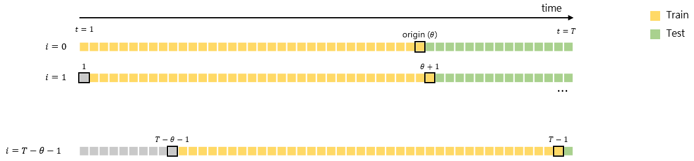
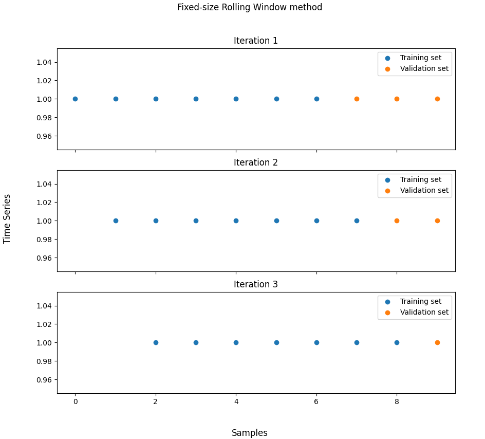

Fixed Size Rolling Window method
timecave.validation_methods.OOS.FixedSizeRollingWindow(ts, fs=1, origin=0.7)
Bases: BaseSplitter
Implements the Fixed Size Rolling Window method.
This class implements the Fixed Size Rolling Window method. This method splits the data into a single training set and several validation sets. Neither the training sets nor the validation sets are disjoint. At every iteration, a single data point is dropped from the validation set and added to the training set. The oldest data point belonging to the training set is also discarded, so that the amount of training samples remains constant.
Parameters:
| Name | Type | Description | Default |
|---|---|---|---|
ts |
ndarray | Series
|
Univariate time series. |
required |
fs |
float | int
|
Sampling frequency (Hz). |
1
|
origin |
int | float
|
The point from which the data is split. If an integer is passed, it is interpreted as an index. If a float is passed instead, it is treated as the percentage of samples that should be used for training. |
0.7
|
Attributes:
| Name | Type | Description |
|---|---|---|
n_splits |
int
|
The number of splits. |
sampling_freq |
int | float
|
The series' sampling frequency (Hz). |
Methods:
| Name | Description |
|---|---|
split |
Split the time series into training and validation sets. |
info |
Provide additional information on the validation method. |
statistics |
Compute relevant statistics for both training and validation sets. |
plot |
Plot the partitioned time series. |
Raises:
| Type | Description |
|---|---|
TypeError
|
If |
ValueError
|
If |
ValueError
|
If |
Warning
Depending on the time series' size, this method can have a large computational cost.
Notes
The Fixed Size Rolling Origin method consists of splitting the data into a training set and a validation set, with the former preceding the latter. At every iteration, a single data point (the one closest to the training set) is dropped from the validation set and added to the training set. Additionally, the oldest data point belonging to the training set is discarded, so that the amount of training samples remains constant. The model is then trained on the new training set and tested on the new validation set. This process ends once the validation set consists of a single data point. The estimate of the true model error is the average validation error.

For more details on this method, the reader should refer to [1].
References
1
Leonard J Tashman. Out-of-sample tests of forecasting accuracy: an analysis and review. International journal of forecasting, 16(4):437–450, 2000.
Source code in timecave/validation_methods/OOS.py
info()
Provide some basic information on the training and validation sets.
This method displays the minimum and maximum validation set size, as well as the training set size.
Examples:
>>> import numpy as np
>>> from timecave.validation_methods.OOS import FixedSizeRollingWindow
>>> ts = np.ones(10);
>>> splitter = FixedSizeRollingWindow(ts);
>>> splitter.info();
Fixed-size Rolling Window method
--------------------------------
Time series size: 10 samples
Training set size (fixed parameter): 7 samples (70.0 %)
Maximum validation set size: 3 samples (30.0 %)
Minimum validation set size: 1 sample (10.0 %)
Source code in timecave/validation_methods/OOS.py
plot(height, width)
Plot the partitioned time series.
This method allows the user to plot the partitioned time series. The training and validation sets are plotted using different colours.
Parameters:
| Name | Type | Description | Default |
|---|---|---|---|
height |
int
|
The figure's height. |
required |
width |
int
|
The figure's width. |
required |
Examples:
>>> import numpy as np
>>> from timecave.validation_methods.OOS import FixedSizeRollingWindow
>>> ts = np.ones(10);
>>> splitter = FixedSizeRollingWindow(ts);
>>> splitter.plot(10, 10);

Source code in timecave/validation_methods/OOS.py
split()
Split the time series into training and validation sets.
This method splits the series' indices into disjoint sets containing the training and validation indices.
At every iteration, an array of training indices and another one containing the validation indices are generated.
Note that this method is a generator. To access the indices, use the next() method or a for loop.
Yields:
| Type | Description |
|---|---|
ndarray
|
Array of training indices. |
ndarray
|
Array of validation indices. |
float
|
Used for compatibility reasons. Irrelevant for this method. |
Examples:
>>> import numpy as np
>>> from timecave.validation_methods.OOS import FixedSizeRollingWindow
>>> ts = np.ones(10);
>>> splitter = FixedSizeRollingWindow(ts);
>>> for ind, (train, val, _) in enumerate(splitter.split()):
...
... print(f"Iteration {ind+1}");
... print(f"Training set indices: {train}");
... print(f"Validation set indices: {val}");
Iteration 1
Training set indices: [0 1 2 3 4 5 6]
Validation set indices: [7 8 9]
Iteration 2
Training set indices: [1 2 3 4 5 6 7]
Validation set indices: [8 9]
Iteration 3
Training set indices: [2 3 4 5 6 7 8]
Validation set indices: [9]
Source code in timecave/validation_methods/OOS.py
statistics()
Compute relevant statistics for both training and validation sets.
This method computes relevant time series features, such as mean, strength-of-trend, etc. for both the whole time series, the training set and the validation set. It can and should be used to ensure that the characteristics of both the training and validation sets are, statistically speaking, similar to those of the time series one wishes to forecast. If this is not the case, using the validation method will most likely lead to a poor assessment of the model's performance.
Returns:
| Type | Description |
|---|---|
DataFrame
|
Relevant features for the entire time series. |
DataFrame
|
Relevant features for the training set. |
DataFrame
|
Relevant features for the validation set. |
Raises:
| Type | Description |
|---|---|
ValueError
|
If the time series is composed of less than three samples. |
Examples:
>>> import numpy as np
>>> from timecave.validation_methods.OOS import FixedSizeRollingWindow
>>> ts = np.hstack((np.ones(5), np.zeros(5)));
>>> splitter = FixedSizeRollingWindow(ts);
>>> ts_stats, training_stats, validation_stats = splitter.statistics();
Frequency features are only meaningful if the correct sampling frequency is passed to the class.
Training and validation set features can only computed if each set is composed of two or more samples.
>>> ts_stats
Mean Median Min Max Variance P2P_amplitude Trend_slope Spectral_centroid Spectral_rolloff Spectral_entropy Strength_of_trend Mean_crossing_rate Median_crossing_rate
0 0.5 0.5 0.0 1.0 0.25 1.0 -0.151515 0.114058 0.5 0.38717 1.59099 0.111111 0.111111
>>> training_stats
Mean Median Min Max Variance P2P_amplitude Trend_slope Spectral_centroid Spectral_rolloff Spectral_entropy Strength_of_trend Mean_crossing_rate Median_crossing_rate
0 0.714286 1.0 0.0 1.0 0.204082 1.0 -0.178571 0.094706 0.428571 0.556506 1.212183 0.166667 0.166667
0 0.571429 1.0 0.0 1.0 0.244898 1.0 -0.214286 0.108266 0.428571 0.387375 1.327880 0.166667 0.166667
0 0.428571 0.0 0.0 1.0 0.244898 1.0 -0.214286 0.124661 0.428571 0.387375 1.327880 0.166667 0.166667
>>> validation_stats
Mean Median Min Max Variance P2P_amplitude Trend_slope Spectral_centroid Spectral_rolloff Spectral_entropy Strength_of_trend Mean_crossing_rate Median_crossing_rate
0 0.0 0.0 0.0 0.0 0.0 0.0 0.0 0 0.0 0.0 inf 0.0 0.0
0 0.0 0.0 0.0 0.0 0.0 0.0 0.0 0 0.0 0.0 inf 0.0 0.0
Source code in timecave/validation_methods/OOS.py
1726 1727 1728 1729 1730 1731 1732 1733 1734 1735 1736 1737 1738 1739 1740 1741 1742 1743 1744 1745 1746 1747 1748 1749 1750 1751 1752 1753 1754 1755 1756 1757 1758 1759 1760 1761 1762 1763 1764 1765 1766 1767 1768 1769 1770 1771 1772 1773 1774 1775 1776 1777 1778 1779 1780 1781 1782 1783 1784 1785 1786 1787 1788 1789 1790 1791 1792 1793 1794 1795 1796 1797 1798 1799 1800 1801 1802 1803 1804 1805 1806 | |